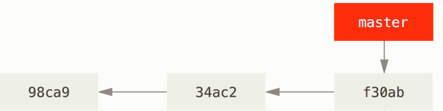
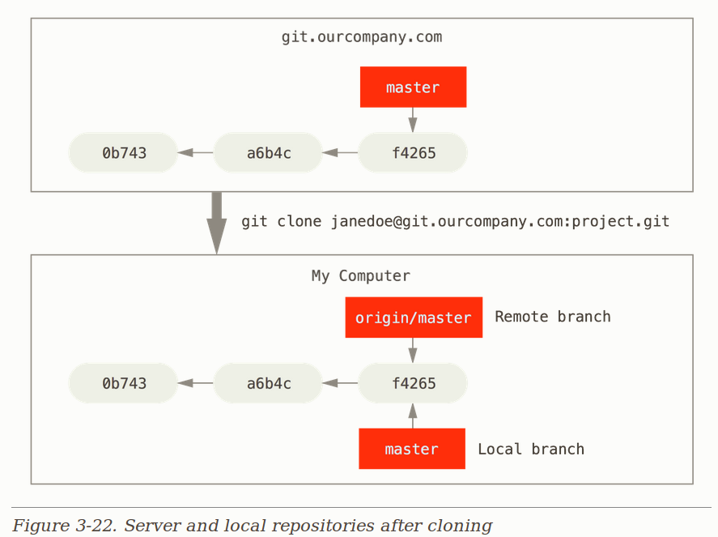
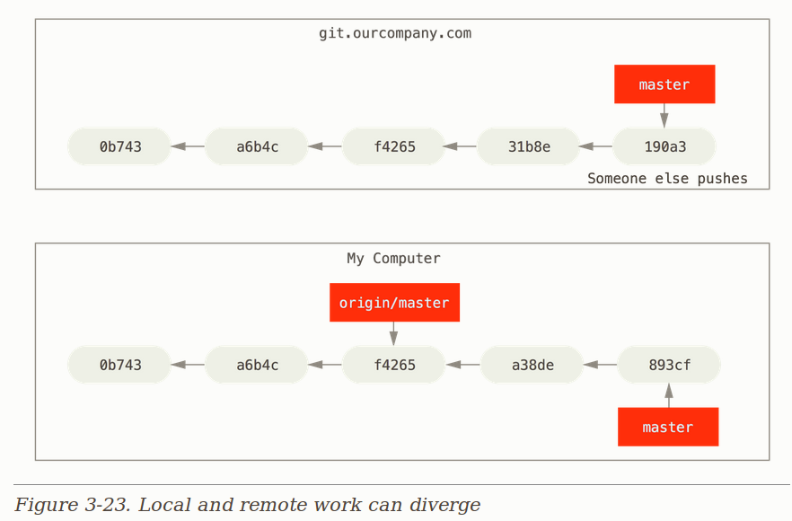
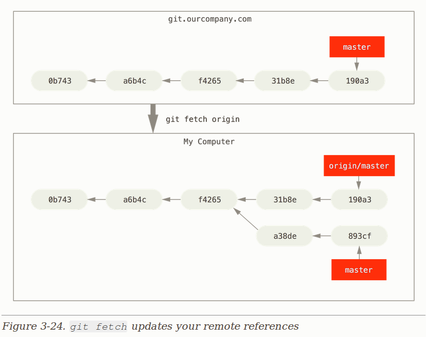

Git session
Table of Contents
- 1. Version control
- 2. Types of version control systems
- 3. Git DVCS
- 3.1. Work flow diagram
- 3.2. Setting up name and e-mail address
- 3.3. Creating a Project
- 3.3.1. Creating
hello.htmlpage - 3.3.2. Create a repository
- 3.3.3. Add the page to the repository
- 3.3.4. Check the status of the repository
- 3.3.5. Making changes
- 3.3.6. Staging the changes
- 3.3.7. Staging and commiting
- 3.3.8. Changes to the files
- 3.3.9. History of project
- 3.3.10. Getting older versions
- 3.3.11. Discard before staging and after staging
- 3.3.12. Removing a commit from a branch
- 3.3.1. Creating
- 3.4. Working with branches
- 3.5. Setting up remote repositroy
- 3.6. Forking repository
- 3.7. Making Pull request
1 Version control
- What is it ?
- Version control is a system that records changes to a file or set of files over time so that you can recall specific versions later.
2 Types of version control systems
2.1 Local version control system

Figure 1: Git local VCS
- Example
rcsMacOS comes withrcspackage
#+END_SRC
2.2 Centralized version control systems

Figure 2: Git Centralized VCS
- Examples
CVSandSubversion
2.3 Distributed version control systems

Figure 3: Git Distributed VCS
- Examples
- Git
- Mercurial
- Bazaar
- or Darcs
3 Git DVCS
3.1 Work flow diagram

Figure 4: Cluster Network Diagram
3.2 Setting up name and e-mail address
- If you've never used git before, first you need to set up your name and e-mail.
- Run the following commands to let git know your name and e-mail address. If git is already installed, skip down to the end of the line.
git config --global user.name "Your Name" git config --global user.email "your_email@whatever.com"
3.3 Creating a Project
3.3.1 Creating hello.html page
- Crate a empty directory
hellothen create ahello.htmlfile in it with the following the "hello world".
mkdir hello cd hello touch hello.html echo "hello world" > hello.html
3.3.2 Create a repository
- So you have a directory that contains one file. Run the git init in order to create a git repo from that directory.
initcommand will intialize the directory to the version control system
git init
- Result
$ git init Initialized empty Git repository in /home/sripathi/git-session/hello/.git/
- Check the status of the repository
git status
3.3.3 Add the page to the repository
- Now let's add the
hello.htmlpage to the repository and check the status
git add hello.html
- Check the status of the repository
git status
- Commit the changes
git commit -m "First Commit"
- Result
$ git add hello.html $ git commit -m "First Commit" [master (root-commit) 911e8c9] First Commit 1 files changed, 1 insertions(+), 0 deletions(-) create mode 100644 hello.html
3.3.4 Check the status of the repository
- Use the
git statuscommand, to check the current state of the repository.
git status
- Result
$ git status # On branch master nothing to commit (working directory clean)
- The command checks the status and reports that there¡¯s nothing to commit, meaning the repository stores the current state of the working directory, and there are no changes to record.
3.3.5 Making changes
- Changing the
hello.htmlpage
cat "<h1>Hello, World!</h1>" >> hello.html
- Checking the status
git status
- Result
$ git status # On branch master # Changes not staged for commit: # (use "git add <file>..." to update what will be committed) # (use "git checkout -- <file>..." to discard changes in working directory) # # modified: hello.html # no changes added to commit (use "git add" and/or "git commit -a")
3.3.6 Staging the changes
- Adding changes
- Use
git addcommand to add the changes to file and check the statusgit add hello.html git status
- Result
$ git add hello.html $ git status # On branch master # Changes to be committed: # (use "git reset HEAD <file>..." to unstage) # # modified: hello.html #
- Use
git resetcommand to undo the changes and check the statusgit checkout hello.html git status
3.3.7 Staging and commiting
- Suppose you have edited three files (a. html, b. html, and c. html). After that you need to commit all the changes so that the changes to a. html and b. html were a single commit, while the changes to c. html were not logically associated with the first two files and were done in a separate commit.
- In theory you can do the following:
git add a.html git add b.html git commit -m "Changes for a and b"
git add c.html git commit -m "Unrelated change to c"
3.3.8 Changes to the files
- First Change: Adding default page tags
<html>and<body>.tohello.htmlfile<html> <body> <h1>Hello, World!</h1> </body> </html> - Add above changes
git add hello.html
- Second change: Add the HTML headers (<head> section) to the
hello.htmlpage.<html> <head> </head> <body> <h1>Hello, World!</h1> </body> </html> - Check the current status
git status
- You will see result as
- Second change: Add the HTML headers (<head> section) to the
$ git status # On branch master # Changes to be committed: # (use "git reset HEAD <file>..." to unstage) # # modified: hello.html # # Changes not staged for commit: # (use "git add <file>..." to update what will be committed) # (use "git checkout -- <file>..." to discard changes in working directory) # # modified: hello.html #
- Commit
git commit -m "Added standard HTML page tags" git status
- Result
$ git commit -m "Added standard HTML page tags" [master 8c32287] Added standard HTML page tags 1 files changed, 3 insertions(+), 1 deletions(-) $ git status # On branch master # Changes not staged for commit: # (use "git add <file>..." to update what will be committed) # (use "git checkout -- <file>..." to discard changes in working directory) # # modified: hello.html # no changes added to commit (use "git add" and/or "git commit -a")
- Adding the second change
git add . git status
- Result
$ git status # On branch master # Changes to be committed: # (use "git reset HEAD <file>..." to unstage) # # modified: hello.html #
- Commit the second change
git commit -m "Added HTML header"
3.3.9 History of project
- Getting a list of changes made is a function of the git log command.
git log
- Result
$ git log
commit fa3c1411aa09441695a9e645d4371e8d749da1dc
Author: Alexander Shvets <alex@githowto.com>
Date: Wed Mar 9 10:27:54 2011 -0500
Added HTML header
commit 8c3228730ed03116815a5cc682e8105e7d981928
Author: Alexander Shvets <alex@githowto.com>
Date: Wed Mar 9 10:27:54 2011 -0500
Added standard HTML page tags
commit 43628f779cb333dd30d78186499f93638107f70b
Author: Alexander Shvets <alex@githowto.com>
Date: Wed Mar 9 10:27:54 2011 -0500
Added h1 tag
commit 911e8c91caeab8d30ad16d56746cbd6eef72dc4c
Author: Alexander Shvets <alex@githowto.com>
Date: Wed Mar 9 10:27:54 2011 -0500
First Commit
3.3.10 Getting older versions
- Get into the older version using
git checkout <commit-id>command and check the contents
git checkout <commit-id> cat hello.html
- Returning to the latest version in the master branch
git checkout master cat hello.html
3.3.11 Discard before staging and after staging
- Let's add something to
hello.htmlpage and check the status
<html>
<head>
</head>
<body>
<h1>Hello, World!</h1>
<!-- This is a bad comment. We want to revert it. -->
</body>
</html>
git status
- Undoing the changes in the working directory
git checkout hello.html git status cat hello.html
- Let's commit something to
hello.htmlfile and check the status
<html>
<head>
<!-- This is an unwanted but staged comment -->
</head>
<body>
<h1>Hello, World!</h1>
</body>
</html>
git add hello.html git status
- Reset the changes
git reset HEAD hello.html
3.3.12 Removing a commit from a branch
resetcommand will clean everything above this commit. Be cacious withresetcommand
git reset --hard <commit-id>
3.4 Working with branches
- Nearly every VCS has some form of branching support. Branching means you diverge from the main line of testingment and continue to do work without messing with that main line.
3.4.1 Default branch master
- Every repository comes with
masteras default branch - In
gitevery branch ispointerwhich points to the latest commit in that branch - Every time you made a new commit
masterpointer will move to the latest commit. - Diagram

Figure 5: master branch
3.4.2 Crating branches
- Let us name our new branch testing.
git branch testing
- Diagram

Figure 6: Git Distributed VCS
- Add style.css file
touch style.css
h1 {
color: red;
}
git add style.css git commit -m "Added css stylesheet"
- Change the main page
- Update the hello.html file, to use style.css
<!-- Author: Alexander Shvets (alex@githowto.com) -->
<html>
<head>
<link type="text/css" rel="stylesheet" media="all" href="style.css" />
</head>
<body>
<h1>Hello, World!</h1>
</body>
</html>
git add hello.html git commit -m "Hello uses style.css"
3.4.3 Navigating Branches
- Now your project has two branches
masterandtesting. - Switching to the Master branch
- To switch between branches simply use the git checkout command.
git checkout master cat hello.html
- Diagram

Figure 7: Git Distributed VCS
$ cat hello.html
<html>
<head>
</head>
<body>
<h1>Hello, World!</h1>
</body>
</html>
- Let us return to the style branch.
git checkout testing cat hello.html
- Diagram

Figure 8: Git Distributed VCS
$ git checkout testing
Switched to branch 'testing'
$ cat hello.html
<!-- Author: Alexander Shvets (alex@githowto.com) -->
<html>
<head>
<link type="text/css" rel="stylesheet" media="all" href="style.css" />
</head>
<body>
<h1>Hello, World!</h1>
</body>
</html>
3.4.4 Changes to the master branch
- At the time you are changing the
masterbranch, someone decided to change the master branch. He added a README file with following content
This is the Hello World example from the git tutorial.
- Commit changes of README file in the master branch.
git checkout master git add README git commit -m "Added README"
3.4.5 Changes to the testing branch
- Commit changes of README file in the master branch.
git checkout testing git touch test.txt echo "test" > test.txt git add test.txt git commit -m "Added test.txt file"
- Diagram

Figure 9: Git Distributed VCS
3.4.6 View the different branches
- View current branche
git branch
- View all branches
git branch -a
3.4.7 Merging branches
- Merging brings changes from two branches into one. Let us go back to the style branch and merge it with master.
git checkout testing git merge master git log
3.4.8 Resolving merge conflicts
- Return to the master and create conflict and add the following changes to
hello.htmlfile
git checkout master
<!-- Author: Alexander Shvets (alex@githowto.com) -->
<html>
<head>
<!-- no style -->
</head>
<body>
<h1>Hello, World! Life is great!</h1>
</body>
</html>
git add hello.html git commit -m 'Life is great!'
- Merge the master branch with testing
git checkout testing git merge master
- Output
$ git checkout style Switched to branch 'style' $ git merge master Auto-merging lib/hello.html CONFLICT (content): Merge conflict in lib/hello.html Automatic merge failed; fix conflicts and then commit the result.
- Open
hello.htmlfile
<!-- Author: Alexander Shvets (alex@githowto.com) -->
<html>
<head>
<<<<<<< HEAD
<link type="text/css" rel="stylesheet" media="all" href="style.css" />
=======
<!-- no style -->
>>>>>>> master
</head>
<body>
<h1>Hello,World! Life is great!</h1>
</body>
</html>
- Make a commit of conflict resolution
git add lib/hello.html git commit -m "Merged master fixed conflict." Result: $ git add lib/hello.html $ git commit -m "Merged master fixed conflict." Recorded resolution for 'lib/hello.html'. [style 645c4e6] Merged master fixed conflict.
3.5 Setting up remote repositroy
- Diagram
Figure 10: master branch
3.5.1 Add remote repository
- Create a repository on
github.comorbitbucket.comwww.github.com - Copy the remote url and add to the local repository
- Syntax
git remote add <name> <git_repo_url>
- Example
git remote add origin https://github.com/ksripathi/git-session.git
3.5.2 Push master branch to the remote repository
- Before we push to remote repository check the status of repository
git status
- Push the changes to remote repository
- Syntax
git push <remote_name> <branch_name>
- Example
git push origin master
3.5.3 Push testing branch to the remote repository
- Before we push to remote repository check the status of local repository
git status
- Push the changes to remote repository
git push origin testing
3.5.4 List remote and local branches
git branch -a
3.5.5 Git clone
git clonecommand will give local and remote branch
git clone <url>
- Diagram

Figure 11: master branch
- What if some else pushes the code to the remote branch ?

Figure 12: master branch
fetchthe changes from remote branches

Figure 13: master branch
3.5.6 Pull the changes from remote branch
- Pull ( fetch + merge )
- Do some changes on remote repository
- Pull the changes from remote repository
- Syntax
git pull <remote_name> <branch_name>
- Example
git pull origin master
3.6 Forking repository
- A fork is a copy of a repository. Forking a repository allows you to freely experiment with changes without affecting the original project.
- Most commonly, forks are used to either propose changes to someone else's project or to use someone else's project as a starting point for your own idea.
3.7 Making Pull request
- Pull requests let you tell others about changes you've pushed to a repository on GitHub.
- Once a pull request is sent, all the original repository collabarators will receive the notification. And merge the pull request if required.